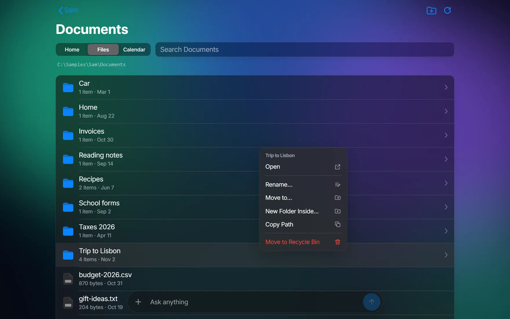

Files
Browse the files on your PC from LocalHub, including from your other devices.

Getting around
The Files tab opens on This PC. Click your way in, and press Backspace to go back up a folder. The search box looks through the folder you’re in and the folders inside it. On This PC, that’s every drive.
Turn on the Drives add-on in Edit Tabs to see how full each drive is. The tab is then called Drives.
What you can do
Right-click a file or folder.
- Open, Download
- Open it, or save a copy to the device you’re on.
- Open in New Tab, Edit as Text
- For text files of up to 1 MB. LocalHub warns you if the file changed since you opened it.
- Rename…, Move to…, Copy Path
- Moves stay within one drive.
- Move to Recycle Bin
- You can get it back from the Recycle Bin in the usual way.
- New Folder…
- Right-click a blank space, or a folder to make one inside it.
- Show in Enclosing Folder
- On a search result, this takes you to where it lives.
You can select several items and move them or send them to the Recycle Bin together.
What it leaves alone
- Hidden and system items aren’t listed, nor are folders full of program parts such as
node_modulesand.git. - Files that hold keys or passwords are hidden, and LocalHub refuses to open them.
- Removable drives have no Recycle Bin, so LocalHub won’t delete from them. Use File Explorer.
- To copy between drives, use File Explorer.
Messages you might see
- Too big to edit here (over 1 MB)
- Open it in another program.
- Not a text file
- Only text can be edited here.
- The file changed since you opened it
- Something else saved it. Reopen it so you don’t overwrite that.
- That name isn’t allowed
- Names can’t hold
\ / : * ? " < > |, and can be up to 255 characters. - Pick items from one drive at a time
- Select from one drive, then the other.